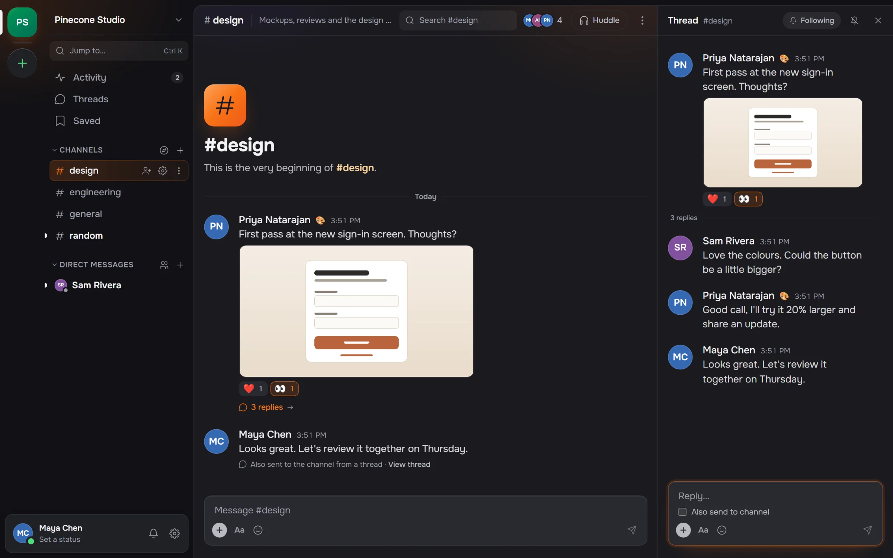
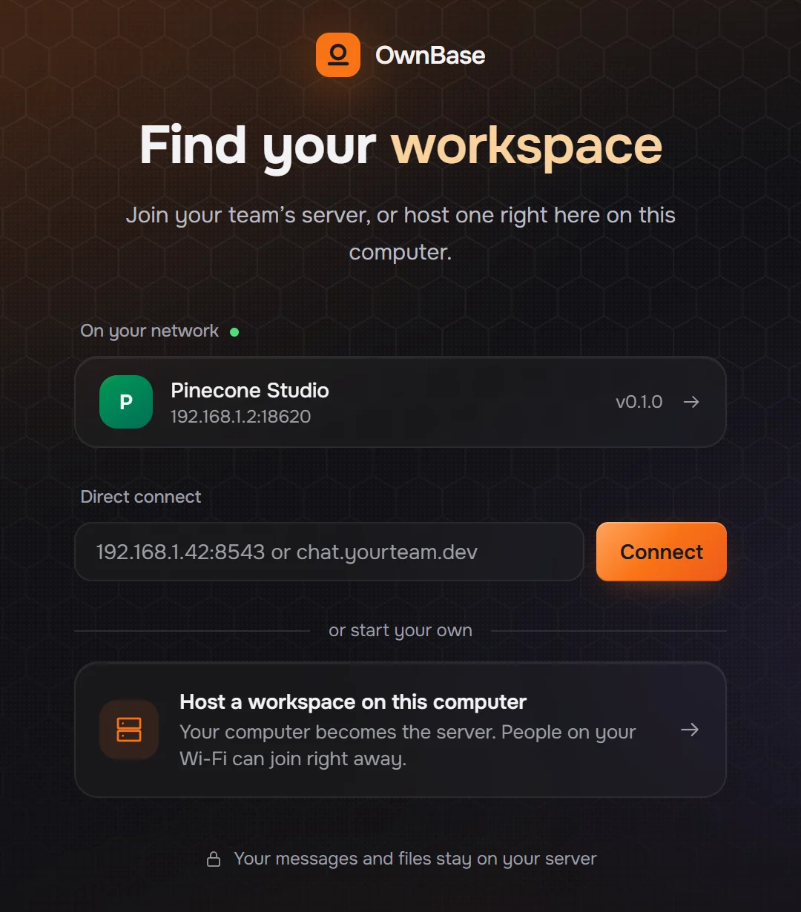
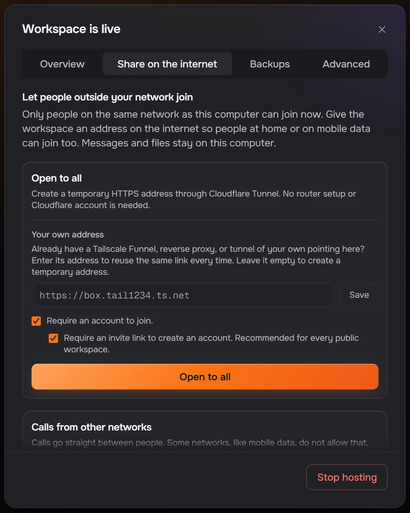
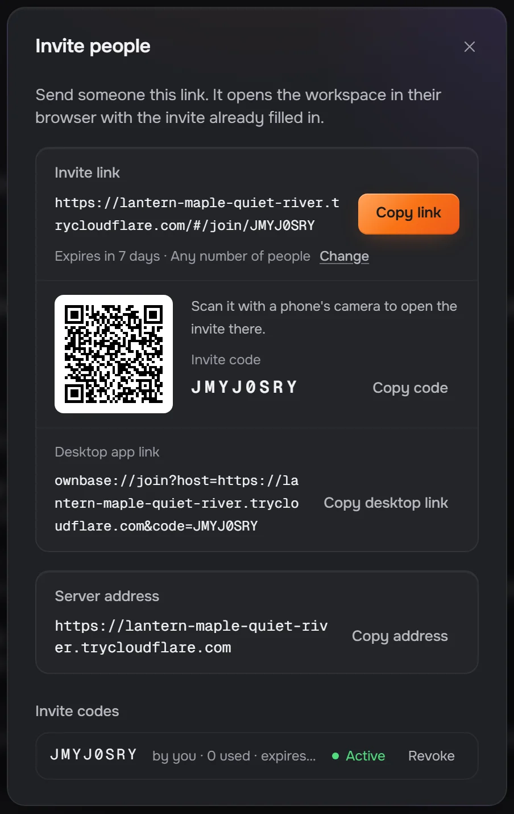
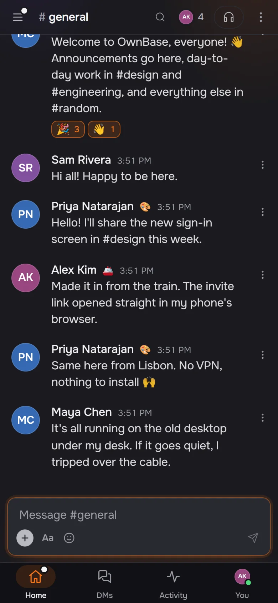
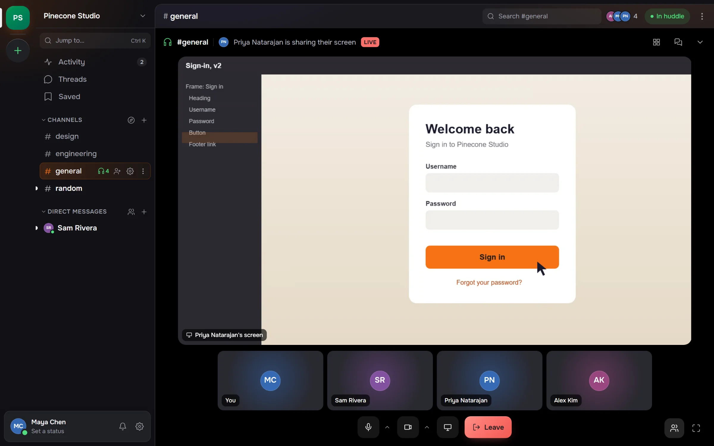
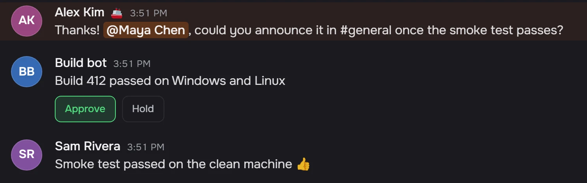

Self-hosted
Free
Everything in the repository, under the MIT license. No member limit. Support through GitHub issues.
Get OwnBase on GitHubOwnBase is open-source team chat that you host. Run it on the computer under your desk or on a small server. Your team joins from the same Wi‑Fi, from across the world, or from a link that opens in any browser.
A pixel-art landscape at dusk. A cabin's orange window is your server. Dotted arcs reach out from it to a house across town, a boat on the lake, a passing train and a city on the horizon, and each one lights up gold as it connects.
Channels, threads, reactions, search, calls and bots. The desktop app and the browser client are the same app, and a narrow window gets a phone layout.

Public and private channels, group DMs, pins, saved items, and drafts that survive a restart.
from:@sam in:#design has:file narrows it down. Free text matches file
names too, so budget finds Q3 Budget.xlsx.
Scheduled messages wait on the server, so they go out even when your laptop is shut.
The server serves the whole client to any browser, phones included. Nothing to install.
Only the owner can change an admin, and nobody can change their own role. A workspace can't be lost to a misclick.
Mute what's noisy, and snooze everything with Do Not Disturb.
Hosting is a button in the desktop app. The same server code runs inside it, so you can move the workspace to a VPS later without changing anything.
Name it and press Start hosting. Your computer becomes the server, and anyone on the same Wi-Fi sees the workspace on their Join screen. One click and they're in.
Reachable at
192.168.1.42:8543

Open to all starts a Cloudflare Quick Tunnel and gives the workspace an HTTPS address. You don't touch your router or need a Cloudflare account. Already run Tailscale Funnel or a reverse proxy? Enter your own address instead.
Reachable at
https://lantern-maple-quiet-river.trycloudflare.com

The link opens the workspace in any browser with the invite already filled in, and phones can scan the QR code. New accounts need an invite by default, so a public address isn't an open door.
Joined from
…trycloudflare.com/#/join/JMYJ0SRY


The workspace is up while the host computer is on. Closing the window keeps it running in the system tray.
The desktop app hosts and joins workspaces on Windows and Mac. On Linux and everything else, run the server, or open a workspace in the browser. OwnBase is in beta, so expect rough edges and keep a backup of the data folder.
The desktop app. Host a workspace on this computer, or join one on your network or from an invite link.
The desktop app, one download for Apple silicon and Intel Macs. Apple hasn't signed it yet, so macOS stops it the first time. Open System Settings, then Privacy & Security, and choose Open Anyway.
The standalone server: one JavaScript file and the browser client it serves. For a VPS, a home server or a spare machine on Linux, macOS or Windows.
node ownbase-server.js --data ./data --name "My Team"
Builds and runs the server from a clone of the repository. Messages and files live
in the ownbase-data volume.
docker compose -f docker/docker-compose.yml up -dNothing to install. Every workspace serves the whole app to the browser, so open your team's invite link and sign in.
Every message, file and account lives in a data folder on the host. Copy it, back it up, or carry it to another machine. There's no account with us and no cloud in between unless you add one.
data/
--backup-dir backs up every 24 hours, checks each copy before keeping
it, and keeps the newest seven.
The owner gets the whole workspace as one .zip from Workspace settings.
ownbase-server restore --from <zip> puts it back.
The standalone server is a single JavaScript file. It needs Node 24 and nothing else, because the database is Node's built-in SQLite.
$ node ownbase-server.js --data ./data --name "My Team" --invite-only
# or, with Docker
$ docker compose -f docker/docker-compose.yml up -dStart a huddle in any channel or DM, with audio, camera and screen share. The server only introduces the people in it. Their audio and video go directly to each other, or through a TURN relay you run when a network blocks direct connections.

A muted microphone sends nothing, and each camera is sent no bigger than the others draw it.
Twelve people with two cameras on cost each of them about a third of a CPU core.
Calls are a mesh. Past eight cameras or sixteen people, the call says once that it may stutter.
Each app gets a bot user, an xoxb- token and incoming webhooks in Slack's
shapes, so most integrations work once you change the URL. Slash commands, events,
buttons and modals work too, signed the way Slack signs them.
$ curl -X POST https://chat.yourteam.dev/hooks/<token> \
-H 'content-type: application/json' \
-d '{"text":"Build 412 passed on Windows and Linux"}'
The integration contract lists every supported method and field, and each place OwnBase differs from Slack.
The self-hosted edition is the whole product, for anyone, companies included. Hosted plans are planned for teams who would rather not run a server.
Free
Everything in the repository, under the MIT license. No member limit. Support through GitHub issues.
Get OwnBase on GitHub$20 a month per workspace
We run the server: hosting, daily backups, updates and a stable HTTPS address, for up to 50 members. Download the folder and move to your own server whenever you like.
Not on sale yet
Annual contract
Single sign-on and SCIM, an audit log, compliance export and an SLA, on your servers or a dedicated one we run.
Not on sale yet